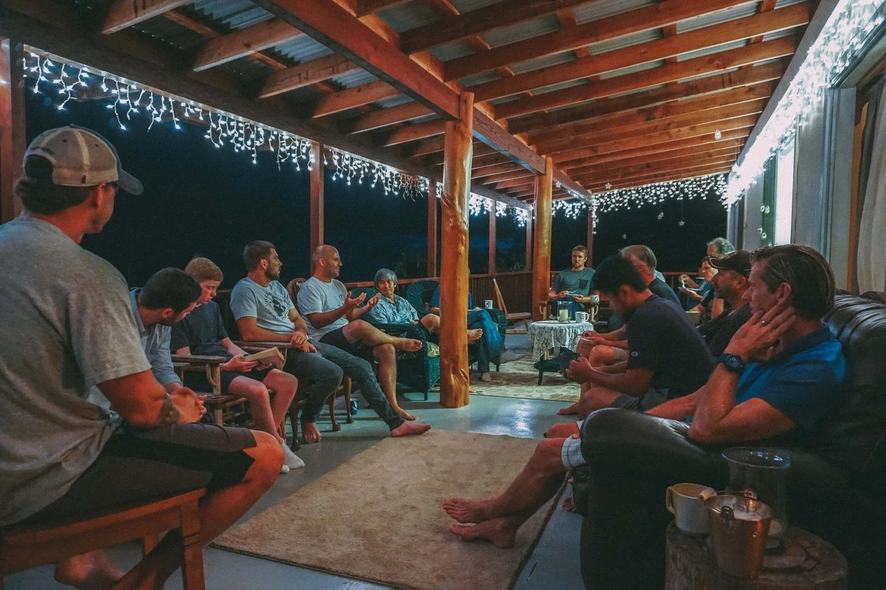

Keiki · Ages 0–10
Children
Coming alongside parents to see our children love Jesus, through Bible lessons, catechism, music and crafts.
Learn more →We warmly welcome you. It would be our delight to have you come and worship the Triune God with us on the Lord's Day.
We believe the Bible is God's Word and our final authority. We gladly stand in the stream of the Reformation, and we hold a historic confession of faith as a faithful summary of what Scripture teaches.
We are a people who have been changed by Jesus and desire others to experience forgiveness and freedom through the shed blood of our risen Savior.
for all of faith and practice.
who alone is Head of His church.
the ordinary means by which God saves and sanctifies.
salvation is wholly of the Lord, from first to last.
Christ freely offered to all on our island and beyond.
a glad and serious approach to the Triune God.
“Salvation belongs to the Lord!”Jonah 2:9
Each Lord's Day we gather to hear God speak in His Word and to answer Him in prayer and praise. Our worship is simple on purpose: the reading and preaching of Scripture, the singing of psalms, hymns and spiritual songs, prayer, and the ordinances of baptism and the Lord's Supper — the means Christ Himself appointed for the good of His people.
We preach through whole books of the Bible, verse by verse, so that God sets the agenda. Our pastor is presently leading us through Leviticus.



Coming alongside parents to see our children love Jesus, through Bible lessons, catechism, music and crafts.
Learn more →A gospel-centered ʻohana meeting for fellowship, Bible study, food and prayer.
Find a group →
Helping our teens grow in the gospel until their faith is their own.
Learn more →Sundays at 4:00 pm · 77-165 Lako St., Kailua-Kona. Come as you are; we would be glad to meet you.